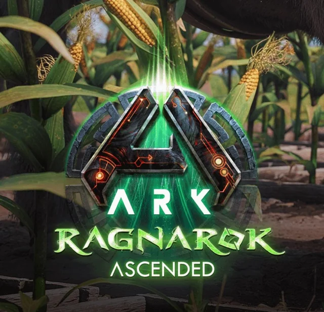
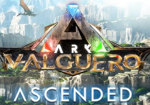
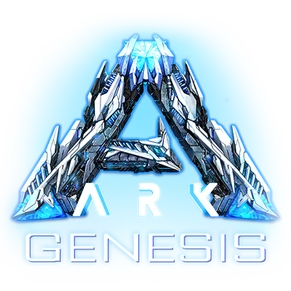
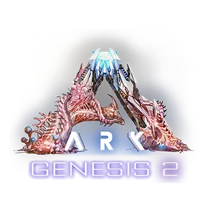
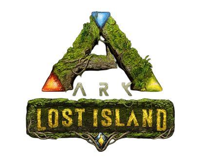

En esta seccion te enseñaremos los diferentes mapas que posee este juego, ademas te daremos una pequeña explicacion sobre cada uno de ellos. A continuacion mostraremos los mapas que ya han sido lanzados y que estan disponibles para jugar:
THE ISLAND
El mapa a continuacion es el principal y mas jugado dentro de las arcas, este trata de una isla llena de misterios y peligrosas criaturas asi como cuevas exorbitantes en las que aguardan extraños artefactos que esperan a ser encontrados, en lo mas alto del cielo se encuentra un ser supremo que controla y supervisa todos los eventos del arca.
Este mapa esta basado en un desierto desolado en el que aguardan peligros mounstruosos como dragones y gusanos de la muerte, este lugar esta custodiado por una enorme manticora a la cual le encanta envenenar supervivientes.
El proximo mapa es considerado como el mas peligroso de todos, debido a que este se desarrolla en oscuras cavernas llena de criaturas mutadas por la radiacion solar que golpea la superficie gracias a una destruida atmosfera, en la caverna mas profunda habita un ser corrompido por el elemento que solamente quiere mas poder.
Este es un lugar corrompido por el elemento, no se trata de un arca como las demas, sino que este lugar es la tierra, nuestro hogar, el cual se perdio por el sobre uso de un material llegado de un misterioso asteroide, en el norte del mapa se encuentra aquel rey del todo que se encarga de corromper a todo lo que se le acerca.
Basado en un mundo magico este lugar cuenta con antiguas runas basado en la mitologia griega, dentro de este hay cuevas donde hay criaturas de antiguos mitos como el minotauro, la medusa y otros similares. El mapa aun esta en desarrollo ya que se planea crear un lugar mas extenso y con mas criaturas fantasticas.
Se trata de un arca misteriosa en donde una isla flota de forma magica en el centro del mapa, este mapa posee uno de los lugares mas ricos en materiales de todo el juego, la isla calvera volcanica esta llena de minerales valiosos que todo superviviente desea con conseguir. Este mapa tiene dos criaturas ancestrales que sirven de custodios ante intrusos.
Los siguientes mapas aun siguen en desarrollo por lo que no se pueden jugar, aunque si se conocen detalles sobre ellos:
LOST COLONY
Basado en un lugar nevado y desertico, donde la vida escasea por las bajas temperaturas del lugar, las criaturas y supervivientes del lugar tuvieron que adaptarse a estas consiciones para poder subsistir, pero, en algun lugar del mapa se encuentra un furioso volcan que se activa frecuentemente arrazando todo lo que hay a su paso.
Este mapa es el mas jugado de todo el juego, ya que tiene la mayor cantidad de criaturas, recursos, asi como una gran variedad de estructuras a lo largo del lugar, por si fuera poco, es el unico lugar del juego donde se pueden encontrar a los majestuosos grifos, criaturas aladas sumamente veloces y poderosas utilizados como asedio en todas las guerras que hubo.

VALGUERO
Este mapa es muy querido, debido a su gran variedad de criaturas, cuevas y biomas. Lo mas emblematico de este mapa es el deinonico, una criatura muy destacada en el juego, además de que el mapa cuenta con buenas zonas de construcción y recursos vitales para la supervivencia.

FJORDUR
Ligado a la mitologia nordica este mapa incluye distintos lugares de la cultura como Midgard, Asgard, Vanaheim y otros mundos nacientes del Yggdrasil, a su vez en este mapa se encuentra al temible Fenrir, un gigantesco lobo helado que se relaciona con la extincion, si lo derrotas puedes obtener una cria de el para domesticarla.
GENESIS
A diferencia de los demas mapas este se lleva a cabo en una simulacion en la que deberas sobrevivir a los desafios que nos presentan los 5 biomas del mapa. Esta lleno de peligros y misiones que deberemos afrontar junto a nuestra compañera de inteligencia artificial HLN-A durante nuestra aventura. Esta simulacion se lleva a cabo dentro de la nave GENESIS, la cual fue otra forma de preparar a los humanos para recuperar la tierra.

GENESIS II
Dentro de la nave GENESIS te despiertas y te encuentras con que la mitad de la nave fue corrompida por Edmund Rockwell, el mismo demente que enloquecio por el elemento en mapas anteriores, tu mision es derrotarlo y recuperar la nave para poder volver a la tierra y luchar contra la amenaza real.

LOST ISLAND
Una de las arcas paralelas del juego, un mapa completo con montañas nevadas, bosques frondozos, volcanes activos y runas antiguas en las cuales aguardan grandes tesoros, en este lugar deberas de enfrentarte al rey de los monos y a su ejercito.

CRYSTAL ISLES
En este mapa deberemos sobrevivir a la gran variedad de biomas y criaturas que este nos presenta. Es imposible no notar la exclusiva prescencia de los wyverns de cristal que están a lo largo del mapa y todas las anomalías que trae consigo. Es un mapa muy destacable en sus hermosas zonas de construcción, cuevas, criaturas, biomas y recursos que serán vitales para nuestra supervivencia.